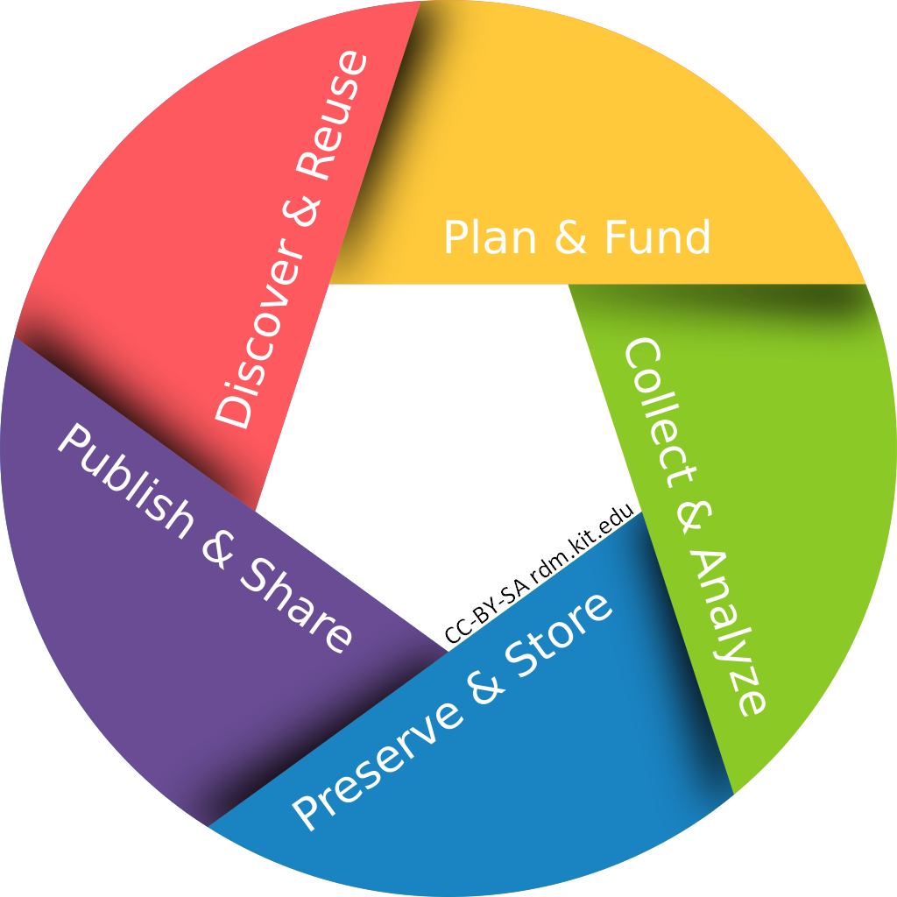

1.1 Introduction to Research Data Management
This section provides a short introduction into the principles of research data mangement. Its purpose is to provide the basic knowledge of research data management needed for Chapter 2.
Please note that this section will not go into too much detail as there are many courses out there describing research data management. At the end of this section links will be provided about where to find further information.
Syllabus Elements
Learning Objectives
At the end of the section the learners can ...
- Demonstrate the importance of research data management
- Differenciate efficient from inefficient research data management
- Explain the FAIR principles
- Explain the difference between a PID and an URL
Target Audience
- attendees of this course
Duration
- 15 minutes
Prerequisites
- Complete 00 Welcome
Learning Tools
- list any tools that are necessary to be used to complete the learning unit
- examples include required software, access to resources, etc.
Learning Content Topic
What is Research Data?
The content in this section is adapted from the DFG Guidelines on the Handling of Research Data.
"Research data is an essential foundation for scientific work. The diversity of this data reflects the wide range of different scientific disciplines, research interests and research methods. Research data might include measurement data, laboratory values, audiovisual information, texts, survey data, objects from collections, or samples that were created, developed or evaluated during scientific work. Methodical forms of testing such as questionnaires, software and simulations may also produce important results for scientific research and should therefore also be categorised as research data."

Research data cycle by RDM@KIT licensed under the CC BY-SA 4.0 license
@KIT: More information regarding research data management (RDM) at KIT can be found at the website of the service team RDM@KIT.
@KIT: Have a look at the Guidelines for Responsible and Substainable Research Data Management at KIT. (German version: "Leitlinien zu einem verantwortungsvollen und nachhaltigen Forschungsdatenmanagement am KIT")
Why should I manage research data?
Baker 2016 asks: „Is there a reproducibility crisis?“
"More than 70% of researchers have tried and failed to reproduce another scientist’s experiments, and more than half have failed to reproduce their own experiments." (Baker 2016)
"More than half pointed to insufficient replication in the lab" (Baker 2016)
Exercise 1.1
Question: What can help researchers to reproduce experiments? What are the advantages of research data management?
Good Research Practice
- Research data must be well documented
- Published research data must be kept accessible and comprehensible
- Published research data must be reusable
- Quality assurance, e.g. by keeping laboratory records
"Researchers document all information relevant to the production of a research result as clearly as is required by and is appropriate for the relevant subject area to allow the result to be reviewed and assessed."
“Continuous quality assurance during the research process includes (…) the keeping of laboratory notebooks.“ (DFG 2019, KIT 2021)
@KIT: More information regarding good research practice at KIT can be found on the website of the Office for Good Scientific Practice and Ethical Principles at KIT (GWP).
English version:
- Deutsche Forschungsgemeinschaft (DFG) (2019): Guidelines for Safeguarding Good Research Practice. Code of Conduct. https://doi.org/10.5281/zenodo.3923601..
- Karlsruhe Institute of Technology (KIT) (2021): Statutes for Safeguarding Good Research Practice at Karlsruhe Institute of Technology (KIT). https://www.sle.kit.edu/downloads/AmtlicheBekanntmachungen/2021_AB_061_English.pdf.
German version:
- Deutsche Forschungsgemeinschaft (DFG) (2022): Leitlinien zur Sicherung guter wissenschaftlicher Praxis. https://doi.org/10.5281/zenodo.6472827.
- Karlsruher Institut für Technologie (KIT) (2021): Satzung zur Sicherung guter wissenschaftlicher Praxis am Karlsruher Institut für Technologie (KIT). https://www.sle.kit.edu/downloads/AmtlicheBekanntmachungen/2021_AB_061.pdf.
Exercise 1.2
Read the "DFG Guidelines of Safeguarding Good Research Practice", especially
- Guideline 7: Cross-phase quality assurance
- Guideline 12: Documentation
- Guideline 13: Providing public access to research results
- Guideline 17: Archiving
OR
Read the "Statutes for Safeguarding Good Research Practice at Karlsruhe Institute of Technology (KIT)", especially
- Article 8: Cross-phase Quality Assurance and Research Design
- Article 11: Documentation
- Article 12: Archiving
- Article 13: Scientific Publication and Providing Public Access to Research Results
Question: What influence does this policy have on your daily work? How does it affect your research? How do you document your research (data)?
FAIR principles
According to Wilkinson et al. (2016) "all research objects should be Findable, Accessible, Interoperable and Reusable (FAIR) both for machines and for people". These principles are now "referred to as the FAIR Guiding Principles."
An overview and a description of these principles can be found at the website of GO FAIR.

FAIR Data Principles from the FOSTER Open Science Training Handbook licensed under a CC0 license.
The content in this section is adapted from GOFAIR licensed under CC-BY 4.0.
{kind=link}
What does FAIR mean? - Findable: The first step in (re)using data is to find them. Metadata and data should be easy to find for both humans and computers. Machine-readable metadata are essential for automatic discovery of datasets and services, so this is an essential component of the FAIRification process. - Accessible: Once the user finds the required data, she/he/they need to know how they can be accessed, possibly including authentication and authorisation. - Interoperable: The data usually need to be integrated with other data. In addition, the data need to interoperate with applications or workflows for analysis, storage, and processing. - Reusable: The ultimate goal of FAIR is to optimise the reuse of data. To achieve this, metadata and data should be well-described so that they can be replicated and/or combined in different settings.
- Wilkinson et al. (2016): The FAIR Guiding Principles for scientific data management and stewardship. Scientific data 3, 160018. https://doi.org/10.1038/sdata.2016.18.
- https://www.go-fair.org/fair-principles/
- https://book.fosteropenscience.eu/
Persistent Identifiers (PIDs)
The following information is translated from forschungsdaten.info licensed under a CC0 license.
What is a persistent identifier (PID)?
- permanent digital identifier
- consists of digits and/or alphanumeric characters
- refers directly to the record or object
Until now, scientific datasets were mostly accessible via specific web addresses (URLs, Uniform Resource Locator). From the perspective of efficient research data management, this is problematic for several reasons.
- URLs do not refer to a specific content, but to a 'location' on the internet. If the desired content, such as a scientific dataset, is moved to another location, the URL for finding it becomes useless.
- Furthermore, it is often the case that a dataset is published in several places on the internet, so that several URLs refer to it, which is impractical for reliable scientific citation.
- Last but not least, URLs often contain semantic references to the domain on which they are based and are therefore not suitable as neutral identifiers.
For the above reasons, the concept of the persistent identifier was developed, which has become widely accepted in the scientific community as the standard for identifying digital objects in recent years.
The following information is used from the Factsheet | DOI licensed under a CC BY 4.0 license.
Digital Object Identifiers (DOI):
- The Digital Object Identifier (DOI) is a persistent identifier to uniquely and permanently identify physical, digital and abstract objects following international standards. DOIs enable the sustainable linking and traceability of digital objects in the world wide web, even if the URL changes.
- DOIs are primarily used for scientific, professional and regulatory publications. The metadata of the publications are directly linked to the individual identifier. Both factors significantly increase the findability and visibility of research output.
- Example: https://doi.org/10.5281/zenodo.8178870
The following information is used from the Factsheet | ORCID licensed unter a CC BY 4.0 license.
Open Researcher and Contributor iD (ORCID):
- The Open Researcher and Contributor iD (ORCID iD) links research results and activities permanently and unambiguously with scholars and researchers worldwide. Using ORCID actively increases the visibility of your research, independent of institutions and commercial providers.
- Example: https://orcid.org/0000-0002-9632-5947
Exercise 1.3
Action: Create your own ORCID-Account. If you already use ORCID then take the time to update your account.
Metadata
The content in this section is adapted from RDM@KIT.
Metadata is structured, machine-readable information about research data, so-called "data about data". A classic example is bibliographic metadata such as author, title, year of publication, and publisher. They serve several functions: to ensure the discoverability of the data, to improve the understandability of the data, and to enable the processing and reuse of the data (Putnings et al. 2021, Riley 2017).
Metadata is stored in a structured way so that it can be read and processed by both humans and machines. Various data exchange formats have become established for this purpose, such as XML (eXtensible Markup Language) and JSON (JavaScript Object Notation).
In order for research data to remain comprehensible, consistent and interoperable, it is important that the associated metadata follow a certain structure. For this reason, a number of cross-disciplinary as well as discipline-specific metadata schemas have evolved and are now considered standards. More detailed information can be found at forschungsdaten.info.
For more information on describing research data using the DataCite metadata schema as an example, see the following video from Research Data Management Bavaria, using the DataCite Metadata Generator and the associated Best Practice Guide. You can also have a look at the course "Fundamentals of Scientific Metadata" of the Helmholtz Metadata Collaboration (HMC).
Summary
The content in this section is adapted from RDM@KIT.
Good research today must not only be rigorous, innovative and insightful - it must also be organized! Research processes increasingly generate and process large amounts of data that should be available for future use. Following FAIR principles, this data must be indexed, documented, archived, and reusable.
In the following section you will learn, how to document your research data.
References
Further information on RDM
- Research Data Management at KIT RDM@KIT
- forschungsdaten.info (DE)
- German National Research Data Infrastructure (NFDI)
Tutorials on RDM
- Current trainings on RDM from RDM@KIT (EN and DE)
- OpenCourse at KIT
- forschungsdaten.info - overview on tutorials and materials (EN and DE)
- forschungsdaten.info - calender (DE)
- Helmholtz Information & Data Science Academy (HiDA)
Suggested Reading
- Deutsche Forschungsgemeinschaft (DFG) (2015): DFG Guidelines on the Handling of Research Data. https://www.dfg.de/download/pdf/foerderung/grundlagen_dfg_foerderung/forschungsdaten/guidelines_research_data.pdf.
- Deutsche Forschungsgemeinschaft (DFG) (2019): Guidelines for Safeguarding Good Research Practice. Code of Conduct. https://doi.org/10.5281/zenodo.3923601.
- Baker (2016): 1,500 scientists lift the lid on reproducibility. Nature 533 (7604), 452–454. https://doi.org/10.1038/533452a.
- Perkel (2023): How to make your scientific data accessible, discoverable and useful. Nature 618 (7967), 1098–1099. https://doi.org/10.1038/d41586-023-01929-7.
- Wilkinson et al. (2016): The FAIR Guiding Principles for scientific data management and stewardship. In: Scientific data 3, S. 160018. https://doi.org/10.1038/sdata.2016.18.